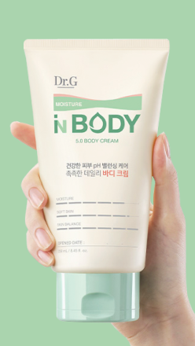

@@include('../../html/include/common/head.html')
@@include('../../html/include/common/header.html')
제품명 확인
인식된 텍스트 영역 중에서 브랜드명, 제품명에 해당하는 영역을 모두 선택해주세요.

제품명이 인식되지 않는다면?
촬영 가이드를 확인하세요.
촬영 가이드 확인
닥터지
그린 마일드 업
인바디
선 에센스
스킨케어
아이
선택 완료
다시 촬영하기
@@include('../../html/include/common/footer.html')